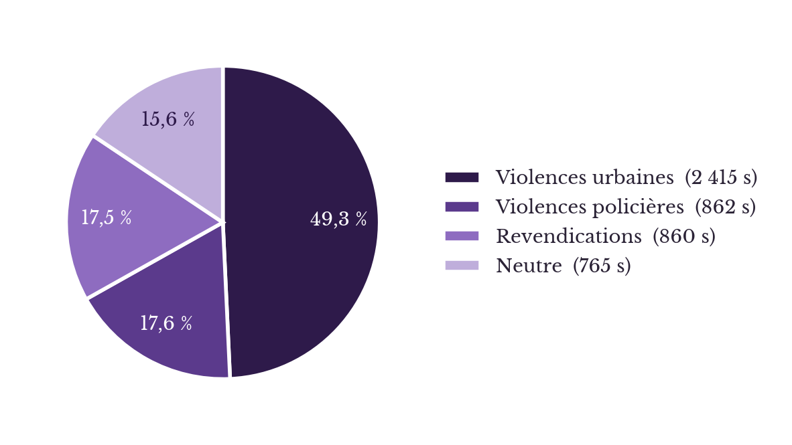
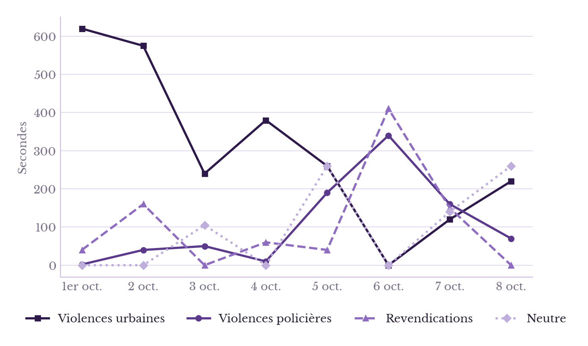
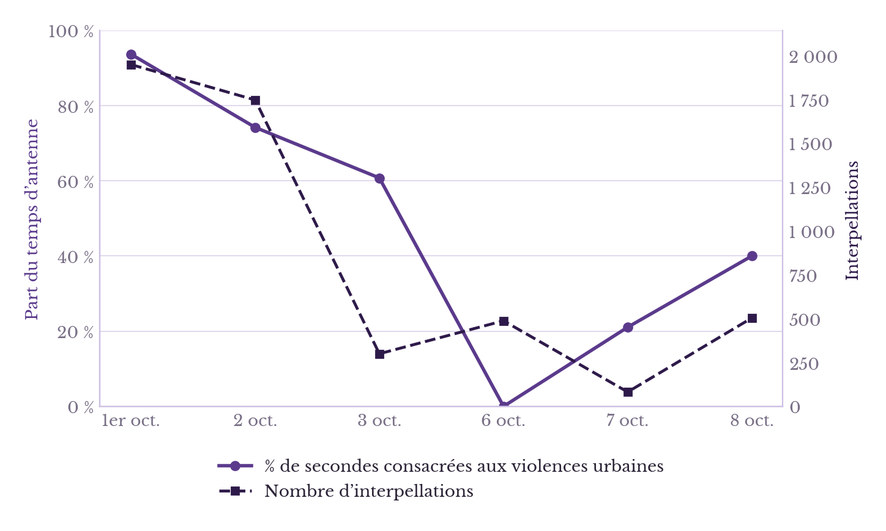
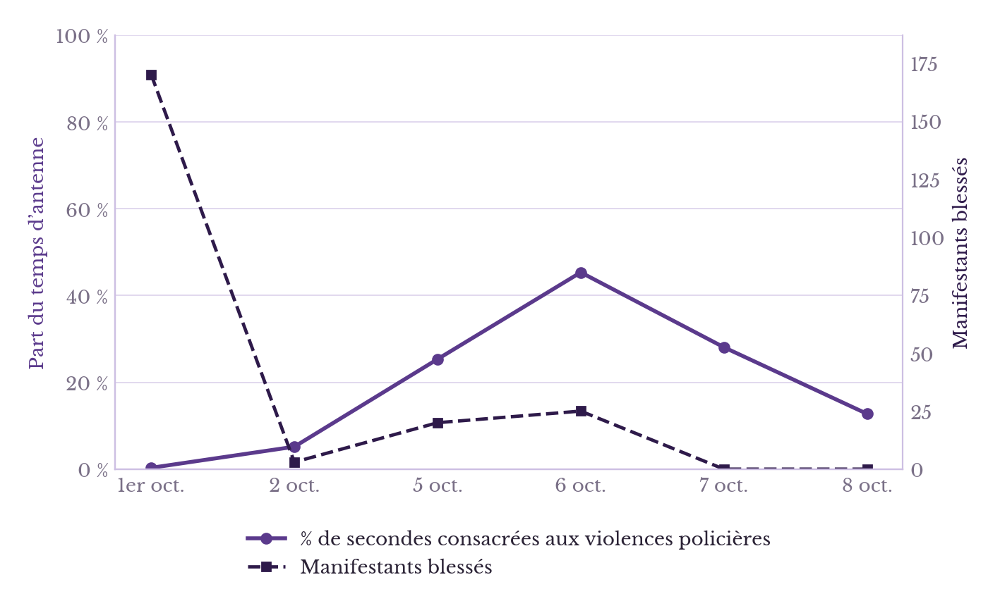

Revendications lycéennes et traitement médiatique : une lutte asymétrique
Analyse comparative du temps médiatique consacré aux violences policières et aux violences urbaines
Les premières manifestations
Le mouvement lycéen d'octobre 2026 figure d'emblée parmi les plus grandes mobilisations de la jeunesse de ce millénaire. Débuté mi-septembre, il prend la forme de blocus devant les établissements scolaires. D’abord initiées à Paris, les manifestations s’étendent à l’ensemble de la France : Lille, Lyon, Marseille, Nice, Nantes, Rennes, Bordeaux et Tours1. Ainsi, ce sont près de 30 %2 des 3 600 lycées qui se trouvent concernés au 1er octobre 2026. Ils revendiquent notamment davantage de moyens humains et matériels pour l’Éducation nationale, avec un remplacement plus systématique des enseignants absents, des classes moins chargées, des emplois du temps allégés, des bâtiments décents et une réforme de Parcoursup, jugée trop opaque et anxiogène.
Pourquoi est-ce exceptionnel ?
Les blocages sont une pratique courante3 pour les groupes à faible capital institutionnel, dont font partie, pour une majorité, les lycéens et les étudiants. L’ampleur est toutefois inhabituelle : 891 lycées bloqués le 6 octobre, entre 256 000 et 450 000 manifestants selon les sources, pour un mouvement qui s’étale depuis presque six jours (bien qu’on en trouve les débuts dès le 21 septembre). Mais surtout, ce que l’on retient de toute cette agitation, ce sont les chiffres suivants : 215 élèves blessés, 88 personnels de l’Éducation nationale et 800 policiers (chiffres du ministère de l’Intérieur), ainsi que près de 6 600 interpellations4. Ce que nous proposons dans cet article, c’est de prendre du recul sur ces chiffres et de voir ce qu’ils révèlent.
Au-delà des revendications, les réactions politiques
« Il n’y a pas de répression policière du mouvement5, affirme Laurent Nuñez, ministre de l’Intérieur, le 6 octobre 2026. Il est excessif de parler de répression policière. C’est la première vérité à rétablir : il n’y a pas d’intervention quand il y a des lycéens qui manifestent pacifiquement »6, ajoute-t-il ensuite le mercredi 7 octobre. Il avait déjà précisé auparavant qu’il « n’y a aucune consigne de retenue à l’intention des forces de l’ordre7 ». Le Premier ministre Sébastien Lecornu, quant à lui, dénonce l’utilisation du terme de violences policières : « Est-ce que dans une manœuvre aussi sensible d’ordre public, des accidents peuvent arriver ? La réponse est oui. Et je dis accident puisque je vois là aussi la terminologie qui est employée de violences policières. [Elles] suggéreraient qu’il y ait des instructions politiques de répression policière. C’est faux, c’est un mensonge et c’est jeter l’opprobre sur la police de la République8 ». Le ministre de l’Éducation, Édouard Geffray, attribue, lui aussi, ou du moins en partie, les violences aux lycéens : « 215 élèves ont été blessés depuis le début du mouvement, majoritairement par des comportements imprudents9 ». Le garde des Sceaux, Gérald Darmanin, appelle le 2 octobre 2026, dans une circulaire (CRIM 2026-18/E1-20/10/2026), à « renforcer l’action répressive10 » des forces de l’ordre.
Que pouvons-nous retenir de tout cela ? D’abord, le soutien inconditionnel du gouvernement à ses forces de l’ordre, une légitimation d’un usage large de la force, un refus de toute consigne générale de retenue et le rejet des termes « répression » et « violences policières ». L’annonce à grand bruit de la fin de l’usage de grenades assourdissantes à la suite de plusieurs blessures graves de lycéens est en cela plus un leurre destiné à calmer les tensions qu’une véritable concession : selon TF1-LCI et l’AFP, cette suspension porte sur les grenades ASSD, utilisées avec un lanceur, les grenades GL-304 Condor restant autorisées11, ainsi que l’ensemble des autres armes intermédiaires, dont les LBD, les grenades lacrymogènes et les grenades de désencerclement.
Délégitimation du mouvement
Le journal de 20 heures de France Télévisions du 1er octobre consacre près de 11 minutes aux manifestations lycéennes (on a déduit du temps total les allusions au soutien donné par la France insoumise (LFI) parce qu'elles ne concernent pas, à proprement parler et dans le sens le plus direct du terme, les manifestations lycéennes, mais plutôt la bulle LFI, ainsi que la présentation des titres), dont voici la répartition : environ 40 secondes réservées aux revendications, 2 secondes aux violences policières, au détour d’une interview d’un manifestant, et presque 10 minutes et 20 secondes, soit aux casseurs, incendies et dégradations commises par les manifestants, soit aux riverains dérangés (« À Toulouse, la colère gagne aussi ceux qui subissent ces blocages »). En tout et pour tout, du 1er au 9 octobre, ce sont 2 415 secondes qui traitent des violences urbaines ou des dégâts liés aux dégradations, contre 862 secondes pour les violences commises par des policiers. On obtient d’ailleurs la répartition suivante :

Le graphique ci-dessus peut s'expliquer de plusieurs façons : soit qu'il reflète, justement, l'équilibre entre violences policières et manifestantes (mais nous pourrons toujours nous interroger sur la place des revendications dans ce traitement), soit qu'il y ait reprise du discours politique évoqué plus haut. À cela nous devons très certainement ajouter les phénomènes de spectacularisation (ou scénarisation) de la violence qui constituent un biais d'élection important : Stanley Cohen, dans un article de 1972 intitulé « Folk Devils and Moral Panics », explique en effet dans sa théorie des paniques morales que les acteurs déviants (et l'on pense là à la phrase de Philippe Juvin, député LR, qui somme les élèves français de retourner travailler « dur », comme leurs « petits copains en Chine »18) ont tendance à être dramatisés, stigmatisés et transformés en menace symbolique pour la société.
Y a-t-il vraiment un traitement asymétrique de l'information ?
Y a-t-il eu asymétrie dans le traitement de l'information ? À ce stade, rien ne permet de l'affirmer, mais la façon dont est abordé le sujet pose question : s'il n'est pas question de nier les violences urbaines (et les violences à l'encontre des policiers qui en découlent parfois), quelle est la place réelle des violences policières, d’autant que certaines des violences les plus spectaculaires (l’affaire du 4x4 de la police de Dunkerque et de la main arrachée) se déroulent dès le 5 octobre. L’évolution de cette répartition au fil de la semaine montre d'abord une baisse du volume de secondes consacrées aux violences urbaines presque symétrique à une hausse de ce volume pour les violences policières. Il est difficile d'établir une causalité directe dans un premier temps (est-ce la répression policière qui met un terme aux violences urbaines en empêchant les rassemblements et blocages à cause de l'effet dissuasif qu'elle provoque ?) et la probabilité que celle-ci soit effectivement vérifiée reste faible puisque l'on constate une diminution du volume consacré aux violences urbaines avant une hausse de la répression policière. Le fait que ceci puisse s'expliquer par un changement de l'agenda politique reste à considérer (nous avons souligné, précédemment, l'impact des réseaux sociaux). Demeure donc l'autre hypothèse, c'est-à-dire que cette répartition est au départ déséquilibrée et que les inversions de tendance s'expliquent par des ajustements successifs.

Il apparaît nettement que la part consacrée aux violences policières est largement inférieure à celle consacrée aux violences urbaines en début de semaine (et l'on peut se questionner sur les valeurs absolues qui justifieraient une telle répartition ; nous en parlerons plus tard). Néanmoins, son évolution traduit-elle une réalité de terrain ? Il semblerait que oui, dès lors que l’on compare le pourcentage de temps consacré aux violences urbaines sur le total du traitement réservé aux manifestations lycéennes et le nombre d’interpellations. Dans le schéma qui suit, nous avons fait le choix délibéré d’enlever les journées des 3 et 4 octobre, car il s’agit d’un week-end et que les mobilisations ont fortement baissé (pas de blocage, puisque les lycées sont généralement fermés), ce qui biaise les chiffres et empêche de fait toute interprétation correcte.

En revanche, lorsque l’on compare le pourcentage de temps consacré aux violences policières sur le total du traitement réservé aux manifestations et le nombre de manifestants blessés, on obtient un graphique tout à fait différent, notamment en début de semaine, d’autant qu’il faut prendre en compte un biais important : les blessures légères chez les manifestants n’ayant entraîné ni plainte, ni hospitalisation, ni déclaration auprès des établissements ne sont pas comptabilisées13. On trouve là notre réticence évoquée plus haut pour justifier la répartition en début de semaine par des valeurs absolues. Les chiffres sont donc probablement très sous-estimés et plutôt du même ordre que ce que l’on peut voir chez les forces de police si l’on part du postulat que la réponse est proportionnée, c’est-à-dire qu’à agression égale correspond une défense égale. Comme pour le graphique qui précède, nous avons fait le choix d’enlever les journées du 3 et du 4 octobre pour des raisons identiques.

Ce que nous pouvons déduire de tout cela, c’est que le début des manifestations (à partir du 1er octobre) a été traité de manière parfaitement asymétrique : si le temps consacré aux violences urbaines suit l’évolution des interpellations, ce n’est pas le cas des violences policières, où il faut attendre le 6 octobre pour qu’elles fassent l’objet d’une attention particulière, essentiellement parce qu’un élève voit sa main arrachée et que surgissent sur les réseaux sociaux des pratiques dangereuses et incompatibles avec un exercice normal du maintien de l’ordre. Jusqu’au 6 octobre, les revendications lycéennes sont peu abordées dans le média, qui se focalise en grande partie sur les dégradations et les violences, avec notamment le reportage signé Olivier Longueval et intitulé « Après les dégâts engendrés par le blocage des lycées… qui va payer le prix des dégradations ?14 », diffusé le 2 octobre 2026. Ce choix de répartition des sujets et des titres participe à la décrédibilisation du mouvement. À cela s’ajoutent les accusations de collusion entre le mouvement lycéen et La France insoumise (LFI), déjà largement diabolisée par le reste de l’échiquier politique, Matignon affirmant qu’il s’agissait d’une « manœuvre organisée par La France insoumise et ses proxys de l’ultragauche15 ». Qu’elle soit consciente ou non, cette stratégie retire aux lycéens leur autonomie et substitue, dans l’espace médiatique et politique, les manipulations supposées16 de La France insoumise à leurs revendications.
Un déni de la démocratie ?
Se pose une question primordiale : y a-t-il eu, lors de ces manifestations, un déni de démocratie ? La décrédibilisation du mouvement est un fait, au moins jusqu’au 6 octobre, tout comme le soutien inconditionnel aux forces de l’ordre malgré les cas constatés de violences et de comportements défaillants ; par ailleurs, les consignes de Gérald Darmanin pour accentuer la répression et le traitement médiatique dominant sont d’autres éléments qui interrogent. La manifestation est un droit protégé par l’article 11 de la Déclaration des droits de l’homme et du citoyen de 1789 et confirmé par la jurisprudence du Conseil d’État du 4 décembre 2023 ; ce droit est d’autant plus important qu’il constitue l’une des seules voies de revendication pour des élèves majoritairement mineurs et privés du droit de vote. Si les blocages de lycées, les dégradations et les autres violences sont interdits par la loi, le nombre d’interpellations en une journée a atteint un niveau historiquement élevé17 et a possiblement eu un effet dissuasif indirect sur la mobilisation, avec une baisse très rapide du nombre d’établissements bloqués à la suite des 1 949 interpellations du 1er octobre et des 1 747 du 2 octobre. Notons toutefois que ce graphique ne permet pas de conclure de façon certaine à cet effet dissuasif, et que les interpellations sont elles-mêmes corrélées au nombre de blocages. Il est donc difficile d’établir le sens de la causalité.
Conclusion
Que pouvons-nous dire de ces mouvements lycéens ? Face à des revendications matérielles et pédagogiques précises, comme le manque de moyens, les classes surchargées et l’opacité de Parcoursup, la réponse du pouvoir s’est principalement manifestée par une posture d’autorité et une couverture sécuritaire. En rejetant catégoriquement le terme de violences policières et en affichant un soutien inconditionnel aux forces de l’ordre, l’exécutif a fait le choix délibéré de la fermeté au détriment du dialogue social. En second lieu, l’analyse du traitement médiatique révèle un mécanisme de décrédibilisation et de marginalisation du mouvement. En consacrant une part prépondérante du temps d’antenne aux violences urbaines et aux dégradations matérielles, au détriment des revendications de fond et de la réalité de la répression subie par les élèves, l’espace public a progressivement invisibilisé la parole lycéenne. L’assignation du mouvement à des manœuvres politiques ou à l’influence d’acteurs tiers est venue achever ce processus de dépossession en retirant aux jeunes leur autonomie politique. Or, pour une population en grande partie mineure et privée du droit de vote, la manifestation et le rassemblement constituent l’un des rares leviers d’action et d’interpellation citoyenne. Terminons : les médias ont participé à naturaliser la violence chez le mouvement. Or, cette naturalisation est dangereuse : elle justifie la violence de la part de l’État, car seul celui-ci peut en détenir la propriété (c'est le monopole de la violence légitime, que théorise Max Weber dans Le Savant et le Politique).
Annexe
| Interpellations | Manifestants blessés | Policiers blessés | Établissements perturbés | |
|---|---|---|---|---|
| 1er octobre | 1949 | 170 | 305 | 1027 |
| 02-oct | 1747 | 3 | 304 | 735 |
| 03-oct | 300 | 3 | 7 | 589 |
| 04-oct | 200 | 3 | 7 | 496 |
| 05-oct | 984 | 20 | 65 | 232 |
| 06-oct | 488 | 25 | 43 | 400 |
| Neutre | Violences policières | Violences urbaines | Revendications | Temps total | |
|---|---|---|---|---|---|
| 1er octobre | 0 | 2 | 620 | 40 | 662 |
| 02-oct | 0 | 40 | 575 | 160 | 775 |
| 03-oct | 105 | 50 | 240 | 0 | 395 |
| 04-oct | 0 | 10 | 380 | 60 | 450 |
| 05-oct | 260 | 190 | 260 | 40 | 750 |
| 06-oct | 0 | 340 | 0 | 410 | 750 |
| 07-oct | 140 | 160 | 120 | 150 | 570 |
| 08-oct | 260 | 70 | 220 | 0 | 550 |
| Temps total | 765 | 862 | 2415 | 860 |
Pour comprendre la méthodologie12 :
- Neutre : toutes les autres interventions : témoignages, dialogue social, etc.
- Violences policières : elles concernent toutes les images ou mentions de violences policières. Elles incluent également les remarques sur l’interdiction des grenades assourdissantes lancées, malgré leur caractère ambigu.
- Violences urbaines : elles concernent toutes les images ou mentions de violences urbaines, de dégradations et de dégâts que les Français devraient payer. Notons, et c’est important, que ces violences urbaines ne sont pas l’œuvre des seuls lycéens et qu’elles sont en partie le fait de casseurs extérieurs au mouvement. L’amalgame est dommageable.
- Revendications : elles concernent toutes les images ou mentions liées aux revendications lycéennes : bâtiments dégradés, non-remplacement des professeurs, etc.
- Mouvement lycéen : des mineurs face à la répression des forces de l’ordre - AMNESTY FR↩
- Le mouvement lycéen, singulier et déjà historique, s’ancre sur le manque de moyens et les « ratés de la massification scolaire »↩
- Erik Neveu, Sociologie des mouvements sociaux.↩
- Mobilisation lycéenne : les questions soulevées par deux semaines d’interventions policières↩
- Prononcé le 6 octobre 2026 - Laurent Nuñez 06102026 France Inter Contestation lycéenne | Vie publique↩
- Mobilisation des lycéens : "Il n'y a pas d'intervention des forces de l'ordre lorsqu'on manifeste de façon pacifique", assure le ministre de l'Intérieur – franceinfo↩
- Un gouvernement fébrile, à la merci d’un embrasement qu’il n’a pas vu venir↩
- « Mensonge », « ultraviolence » : la crise lycéenne a enflammé l’Assemblée↩
- Mobilisation des lycéens en France: 3000 professeurs remplaçants arrivent «dans les heures qui viennent», annonce Édouard Geffray - RFI↩
- Édition du vendredi 2 octobre 2026 en replay - Journal 20h00 | France TV↩
- Mouvement lycéen : l'usage des grenades assourdissantes suspendu après la main arrachée d'un jeune à Lens | TF1 Info↩
- Vous trouverez le détail en fin d’article.↩
- Mobilisation lycéenne : L’IGPN a ouvert 24 enquêtes depuis le début du mouvement, déclare le ministère de l’intérieur↩
- Après les dégâts engendrés par le blocage des lycées, Gérald Darmanin milite pour que les parents des casseurs paient – franceinfo↩
- Revendications locales, vidéos virales, soutien de LFI… Comment le blocage de quelques lycées s'est transformé en un mouvement d'ampleur – franceinfo↩
- Le choix du terme « supposé » est délibéré. Si les élus de la France insoumise ont bien soutenu et politisé le mouvement, rien n’affirme qu’ils en soient les instigateurs et les organisateurs : Dans les quartiers populaires, un mouvement lycéen très politisé, accompagné, mais pas manipulé↩
- Vrai ou faux. Avec le mouvement des lycéens, y a-t-il "plus d'interpellations qu'au plus fort des gilets jaunes" ? – franceinfo↩
- Face à la colère lycéenne, un député LR réactive le préjugé raciste du Chinois travailleur | Mediapart↩